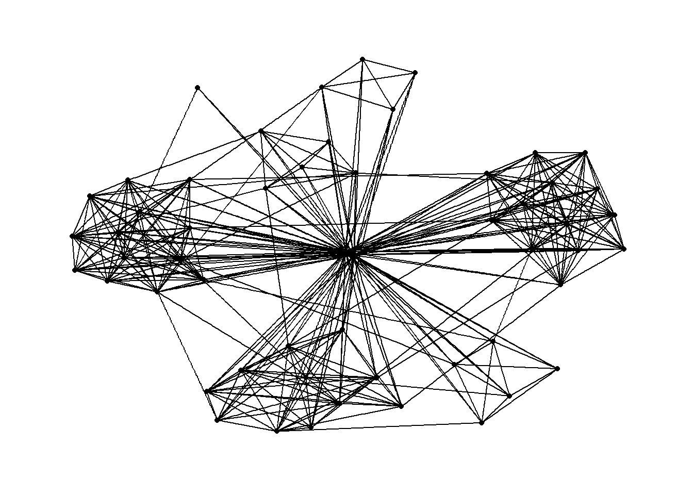
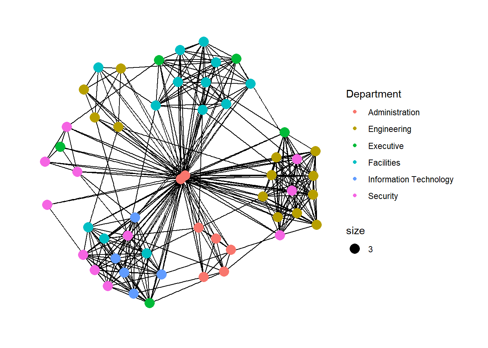
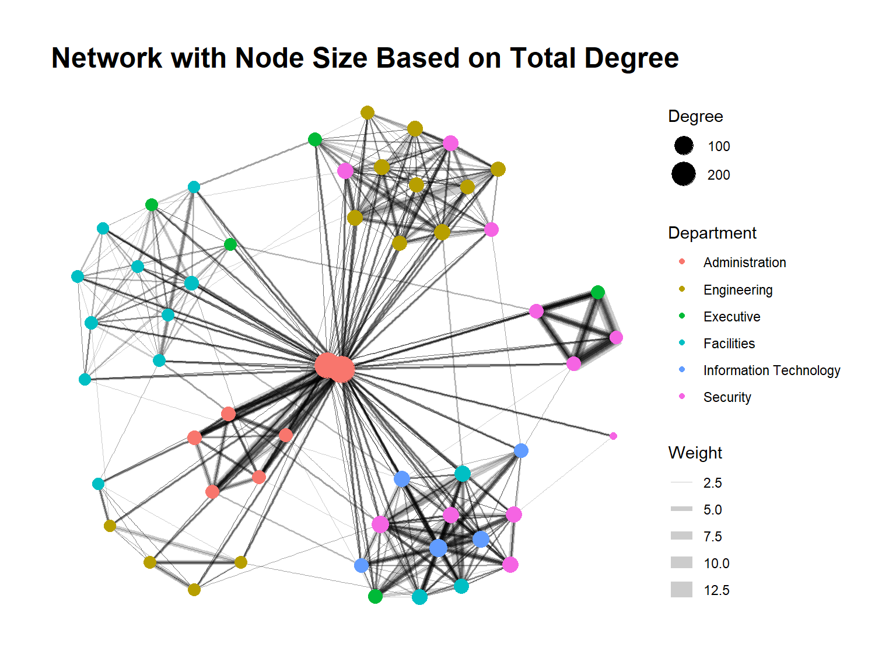
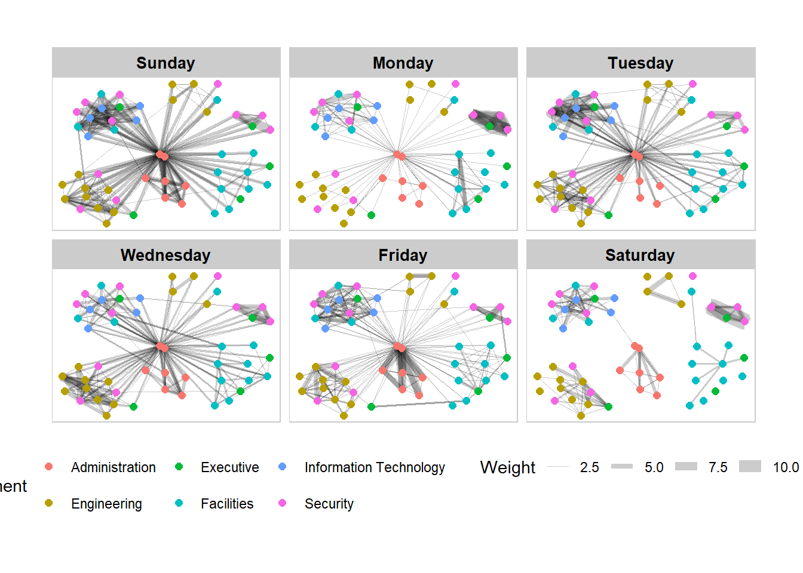
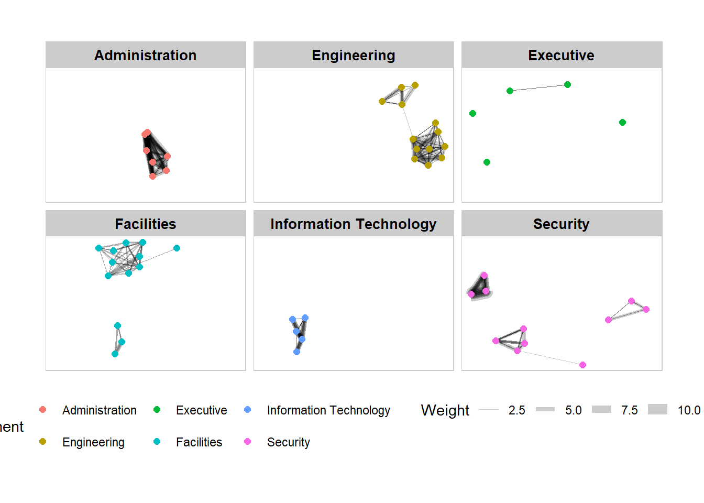
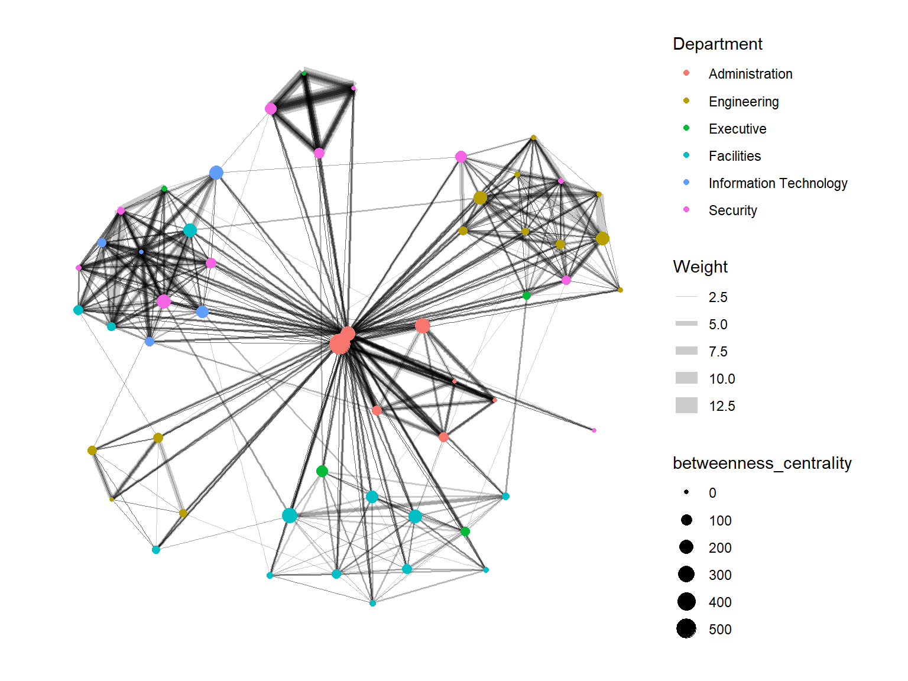

pacman::p_load(igraph, tidygraph, ggraph,
visNetwork, lubridate, clock,
tidyverse, graphlayouts)Hands-on Exercise 9: Modelling, Visualising and Analysing Network Data with R
1. Overview
This chapter explores techniques for modeling, analyzing and visualizing network data using R. Networks are powerful mathematical structures that represent relationships between entities, making them suitable for analyzing complex systems from social interactions to organizational communication patterns.
Core learning objectives include:
- Creating graph object data frames with dplyr, lubridate, and tidygraph
- Building network visualizations using ggraph
- Computing network metrics to quantify structural properties
- Creating advanced graph visualizations incorporating network metrics
- Developing interactive network visualizations with visNetwork
2. Getting Started
2.1 Installing and launching R packages
The analysis requires several network-specific packages: igraph (for core network algorithms), tidygraph (for tidy network manipulation), ggraph (for network visualization), and visNetwork (for interactive visualization). The tidyverse and lubridate packages provide additional data manipulation capabilities.
3. The Data
The dataset comes from an oil exploration and extraction company called GAStech. It contains email communication data between 55 employees over a two-week period.
3.1 The edges data
- GAStech-email_edges.csv contains 9063 email correspondences between employees.
Each record represents a single email sent from one employee to another, with attributes including the date, subject, and other metadata.
3.2 The nodes data
- GAStech_email_nodes.csv contains information about the 55 employees, including their names, departments, and job titles.
These two datasets together form a complete network representation, where employees are nodes and emails are edges connecting them.
3.3 Importing network data from files
First, import the node and edge data files using the read_csv() function from the readr package:
GAStech_nodes <- read_csv("data/GAStech_email_node.csv")
GAStech_edges <- read_csv("data/GAStech_email_edge-v2.csv")3.4 Reviewing the imported data
Examining the structure of the imported data reveals the attributes and data types:
glimpse(GAStech_edges)Rows: 9,063
Columns: 8
$ source <dbl> 43, 43, 44, 44, 44, 44, 44, 44, 44, 44, 44, 44, 26, 26, 26…
$ target <dbl> 41, 40, 51, 52, 53, 45, 44, 46, 48, 49, 47, 54, 27, 28, 29…
$ SentDate <chr> "6/1/2014", "6/1/2014", "6/1/2014", "6/1/2014", "6/1/2014"…
$ SentTime <time> 08:39:00, 08:39:00, 08:58:00, 08:58:00, 08:58:00, 08:58:0…
$ Subject <chr> "GT-SeismicProcessorPro Bug Report", "GT-SeismicProcessorP…
$ MainSubject <chr> "Work related", "Work related", "Work related", "Work rela…
$ sourceLabel <chr> "Sven.Flecha", "Sven.Flecha", "Kanon.Herrero", "Kanon.Herr…
$ targetLabel <chr> "Isak.Baza", "Lucas.Alcazar", "Felix.Resumir", "Hideki.Coc…
Warning
The output reveals that the SentDate field is treated as a “Character” data type instead of a proper date data type. This needs to be corrected before proceeding with analysis.
3.5 Wrangling time
Converting the date string to a proper date format and extracting the day of the week:
GAStech_edges <- GAStech_edges %>%
mutate(SendDate = dmy(SentDate)) %>%
mutate(Weekday = wday(SentDate,
label = TRUE,
abbr = FALSE))
Key date manipulation concepts
- The dmy() function from lubridate transforms text dates to Date data type
- wday() extracts the day of the week as an ordered factor when label = TRUE
- Setting abbr = FALSE returns full day names like “Monday” instead of abbreviations
- These functions create proper temporal dimensions for network analysis
3.6 Reviewing the revised date fields
glimpse(GAStech_edges)Rows: 9,063
Columns: 10
$ source <dbl> 43, 43, 44, 44, 44, 44, 44, 44, 44, 44, 44, 44, 26, 26, 26…
$ target <dbl> 41, 40, 51, 52, 53, 45, 44, 46, 48, 49, 47, 54, 27, 28, 29…
$ SentDate <chr> "6/1/2014", "6/1/2014", "6/1/2014", "6/1/2014", "6/1/2014"…
$ SentTime <time> 08:39:00, 08:39:00, 08:58:00, 08:58:00, 08:58:00, 08:58:0…
$ Subject <chr> "GT-SeismicProcessorPro Bug Report", "GT-SeismicProcessorP…
$ MainSubject <chr> "Work related", "Work related", "Work related", "Work rela…
$ sourceLabel <chr> "Sven.Flecha", "Sven.Flecha", "Kanon.Herrero", "Kanon.Herr…
$ targetLabel <chr> "Isak.Baza", "Lucas.Alcazar", "Felix.Resumir", "Hideki.Coc…
$ SendDate <date> 2014-01-06, 2014-01-06, 2014-01-06, 2014-01-06, 2014-01-0…
$ Weekday <ord> Friday, Friday, Friday, Friday, Friday, Friday, Friday, Fr…3.7 Wrangling attributes
Individual email records aren’t immediately useful for visualization. Aggregating them by relevant dimensions creates a more meaningful network representation:
GAStech_edges_aggregated <- GAStech_edges %>%
filter(MainSubject == "Work related") %>%
group_by(source, target, Weekday) %>%
summarise(Weight = n()) %>%
filter(source!=target) %>%
filter(Weight > 1) %>%
ungroup()
4. Understanding the aggregation process
- Filtering for work-related emails focuses the analysis on professional communications
- Grouping by source, target, and weekday preserves temporal patterns
- The Weight field counts the number of emails between each pair
- Removing self-emails (where source = target) eliminates self-loops
- Filtering for Weight > 1 focuses on repeated communications, revealing stronger relationships
4.1 Reviewing the revised edges file
glimpse(GAStech_edges_aggregated)Rows: 1,372
Columns: 4
$ source <dbl> 1, 1, 1, 1, 1, 1, 1, 1, 1, 1, 1, 1, 1, 1, 1, 1, 1, 1, 1, 1, 1,…
$ target <dbl> 2, 2, 2, 2, 2, 3, 3, 3, 3, 3, 4, 4, 4, 4, 4, 5, 5, 5, 5, 5, 6,…
$ Weekday <ord> Sunday, Monday, Tuesday, Wednesday, Friday, Sunday, Monday, Tu…
$ Weight <int> 5, 2, 3, 4, 6, 5, 2, 3, 4, 6, 5, 2, 3, 4, 6, 5, 2, 3, 4, 6, 5,…5. Creating network objects using tidygraph
The tidygraph package provides a tidy API for graph/network manipulation. It conceptualizes network data as two tidy tables - one for nodes and one for edges - and allows seamless switching between them while maintaining the relational structure.
5.1 The tbl_graph object
Two key functions for creating network objects:
tbl_graph()creates a network object from separate nodes and edges data framesas_tbl_graph()converts various existing network data formats into a tbl_graph object
5.2 The dplyr verbs in tidygraph
The activate() function serves as a switch between the nodes and edges tables. All dplyr verbs applied to a tbl_graph object affect only the currently active table.
Special accessor functions provide access to different parts of the graph: - .N() accesses node data while manipulating edges - .E() accesses edge data while manipulating nodes - .G() accesses the entire tbl_graph object
5.3 Using tbl_graph() to build a tidygraph data model
Creating the network graph object:
GAStech_graph <- tbl_graph(nodes = GAStech_nodes,
edges = GAStech_edges_aggregated,
directed = TRUE)5.4 Reviewing the output tidygraph’s graph object
GAStech_graph# A tbl_graph: 54 nodes and 1372 edges
#
# A directed multigraph with 1 component
#
# Node Data: 54 × 4 (active)
id label Department Title
<dbl> <chr> <chr> <chr>
1 1 Mat.Bramar Administration Assistant to CEO
2 2 Anda.Ribera Administration Assistant to CFO
3 3 Rachel.Pantanal Administration Assistant to CIO
4 4 Linda.Lagos Administration Assistant to COO
5 5 Ruscella.Mies.Haber Administration Assistant to Engineering Group Mana…
6 6 Carla.Forluniau Administration Assistant to IT Group Manager
7 7 Cornelia.Lais Administration Assistant to Security Group Manager
8 44 Kanon.Herrero Security Badging Office
9 45 Varja.Lagos Security Badging Office
10 46 Stenig.Fusil Security Building Control
# ℹ 44 more rows
#
# Edge Data: 1,372 × 4
from to Weekday Weight
<int> <int> <ord> <int>
1 1 2 Sunday 5
2 1 2 Monday 2
3 1 2 Tuesday 3
# ℹ 1,369 more rowsThe output shows that GAStech_graph is a tbl_graph object with 54 nodes and 1372 edges. It displays the first rows of both node and edge data, and indicates that the Node Data is currently active.
5.5 Graph Summary Statistics
Network summary statistics provide a quantitative overview of the graph structure:
GAStech_graph %>%
activate(nodes) %>%
mutate(degree = centrality_degree()) %>%
as_tibble() %>%
summarise(avg_degree = mean(degree),
min_degree = min(degree),
max_degree = max(degree),
sd_degree = sd(degree))# A tibble: 1 × 4
avg_degree min_degree max_degree sd_degree
<dbl> <dbl> <dbl> <dbl>
1 25.4 1 266 45.0These statistics help understand the overall connectivity patterns in the network and identify potential outliers.
5.6 Changing the active object
Switching between nodes and edges using activate():
GAStech_graph %>%
activate(edges) %>%
arrange(desc(Weight))# A tbl_graph: 54 nodes and 1372 edges
#
# A directed multigraph with 1 component
#
# Edge Data: 1,372 × 4 (active)
from to Weekday Weight
<int> <int> <ord> <int>
1 40 41 Saturday 13
2 41 43 Monday 11
3 35 31 Tuesday 10
4 40 41 Monday 10
5 40 43 Monday 10
6 36 32 Sunday 9
7 40 43 Saturday 9
8 41 40 Monday 9
9 19 15 Wednesday 8
10 35 38 Tuesday 8
# ℹ 1,362 more rows
#
# Node Data: 54 × 4
id label Department Title
<dbl> <chr> <chr> <chr>
1 1 Mat.Bramar Administration Assistant to CEO
2 2 Anda.Ribera Administration Assistant to CFO
3 3 Rachel.Pantanal Administration Assistant to CIO
# ℹ 51 more rows6. Plotting Static Network Graphs with ggraph package
The ggraph package extends ggplot2 for network visualization, making it easier to apply familiar ggplot skills to network graphs.
Three main components of a ggraph network visualization: - nodes (the entities in the network) - edges (the connections between entities) - layouts (the spatial arrangement of nodes)
6.1 Plotting a basic network graph
ggraph(GAStech_graph) +
geom_edge_link() +
geom_node_point()
Core ggraph functions
ggraph()initializes the plot with data and layout specificationsgeom_edge_link()draws the connections between nodesgeom_node_point()visualizes the nodes themselves- These functions mirror the layered grammar of graphics from ggplot2
6.2 Changing the default network graph theme
g <- ggraph(GAStech_graph) +
geom_edge_link(aes()) +
geom_node_point(aes())
g + theme_graph()
The theme_graph() function provides better defaults for network visualization by removing axes, grids, and borders that aren’t relevant for networks.
6.3 Changing the coloring of the plot
g <- ggraph(GAStech_graph) +
geom_edge_link(aes(colour = 'grey50')) +
geom_node_point(aes(colour = 'grey40'))
g + theme_graph(background = 'grey10',
text_colour = 'white')
6.4 Working with ggraph’s layouts
ggraph supports multiple layout algorithms that determine how nodes are positioned in the visualization. Options include: star, circle, nicely (default), dh, gem, graphopt, grid, mds, sphere, randomly, fr, kk, drl and lgl.
6.5 Comparing Network Layouts
Different layout algorithms reveal different aspects of network structure:
layout_options <- c("fr", "kk", "drl", "lgl")
plots <- list()
for (i in 1:length(layout_options)) {
plots[[i]] <- ggraph(GAStech_graph, layout = layout_options[i]) +
geom_edge_link(alpha = 0.1) +
geom_node_point(aes(color = Department), size = 3) +
theme_graph() +
labs(title = paste("Layout:", layout_options[i]))
}
gridExtra::grid.arrange(grobs = plots, ncol = 2)This comparison helps select the most appropriate layout for revealing specific network patterns. Each algorithm has strengths: - FR (Fruchterman-Reingold): Good for revealing clusters - KK (Kamada-Kawai): Emphasizes overall structure - DRL: Handles large networks efficiently - LGL: Good for hierarchical structures
6.6 Fruchterman and Reingold layout
g <- ggraph(GAStech_graph,
layout = "fr") +
geom_edge_link(aes()) +
geom_node_point(aes())
g + theme_graph()
The “fr” layout (Fruchterman-Reingold) uses a force-directed algorithm that positions nodes as if they repel each other while edges act as springs pulling connected nodes together.
6.7 Modifying network nodes
Coloring nodes by department reveals organizational structure:
g <- ggraph(GAStech_graph,
layout = "nicely") +
geom_edge_link(aes()) +
geom_node_point(aes(colour = Department,
size = 3))
g + theme_graph()
This visualization immediately reveals department-based clustering in communication patterns.
6.8 Modifying edges
Mapping edge thickness to the Weight variable (number of emails exchanged):
g <- ggraph(GAStech_graph,
layout = "nicely") +
geom_edge_link(aes(width=Weight),
alpha=0.2) +
scale_edge_width(range = c(0.1, 5)) +
geom_node_point(aes(colour = Department),
size = 3)
g + theme_graph()This visualization now shows both organizational structure through node color and communication intensity through edge thickness.
6.9 Node Degree Visualization
Node degree (number of connections) is a fundamental centrality measure that identifies highly connected individuals:
g <- ggraph(GAStech_graph,
layout = "fr") +
geom_edge_link(aes(width=Weight),
alpha=0.2) +
scale_edge_width(range = c(0.1, 5)) +
geom_node_point(aes(colour = Department,
size = centrality_degree(mode = "total"))) +
scale_size_continuous(range = c(2, 8), name = "Degree") +
labs(title = "Network with Node Size Based on Total Degree") +
theme_graph()
g
This visualization immediately identifies communication hubs within the organization, regardless of department affiliation.
7. Creating facet graphs
Faceting is a powerful technique to split visualization into subplots based on categorical variables. For networks, this helps reduce edge over-plotting and reveals patterns across different categories.
Three faceting functions in ggraph: - facet_nodes() - draws edges only when both connected nodes appear in the panel - facet_edges() - always draws all nodes in all panels - facet_graph() - facets on two variables simultaneously
7.1 Working with facet_edges()
Faceting by the day of the week:
set_graph_style()
g <- ggraph(GAStech_graph,
layout = "nicely") +
geom_edge_link(aes(width=Weight),
alpha=0.2) +
scale_edge_width(range = c(0.1, 5)) +
geom_node_point(aes(colour = Department),
size = 2)
g + facet_edges(~Weekday)This visualization shows how communication patterns evolve throughout the week.
7.2 Working with facet_edges() and theme adjustments
set_graph_style()
g <- ggraph(GAStech_graph,
layout = "nicely") +
geom_edge_link(aes(width=Weight),
alpha=0.2) +
scale_edge_width(range = c(0.1, 5)) +
geom_node_point(aes(colour = Department),
size = 2) +
theme(legend.position = 'bottom')
g + facet_edges(~Weekday)7.3 A framed facet graph
Adding frames around each facet improves visual separation:
set_graph_style()
g <- ggraph(GAStech_graph,
layout = "nicely") +
geom_edge_link(aes(width=Weight),
alpha=0.2) +
scale_edge_width(range = c(0.1, 5)) +
geom_node_point(aes(colour = Department),
size = 2)
g + facet_edges(~Weekday) +
th_foreground(foreground = "grey80",
border = TRUE) +
theme(legend.position = 'bottom')
7.4 Department Communication Patterns
Analyzing which departments communicate most frequently with each other reveals organizational workflow:
GAStech_graph %>%
activate(edges) %>%
as_tibble() %>%
left_join(
GAStech_graph %>%
activate(nodes) %>%
as_tibble() %>%
select(id, Department),
by = c("from" = "id")
) %>%
rename(from_dept = Department) %>%
left_join(
GAStech_graph %>%
activate(nodes) %>%
as_tibble() %>%
select(id, Department),
by = c("to" = "id")
) %>%
rename(to_dept = Department) %>%
group_by(from_dept, to_dept) %>%
summarise(total_weight = sum(Weight)) %>%
arrange(desc(total_weight)) %>%
ungroup() %>%
slice_head(n = 10) %>%
ggplot(aes(x = reorder(paste(from_dept, "→", to_dept), total_weight),
y = total_weight)) +
geom_col(fill = "steelblue") +
coord_flip() +
labs(title = "Top 10 Inter-Department Communication Flows",
x = "",
y = "Total Email Volume") +
theme_minimal()
This analysis reveals which departments are most tightly coupled in their work processes.
7.5 Working with facet_nodes()
Faceting by department shows communication patterns within each organizational unit:
set_graph_style()
g <- ggraph(GAStech_graph,
layout = "nicely") +
geom_edge_link(aes(width=Weight),
alpha=0.2) +
scale_edge_width(range = c(0.1, 5)) +
geom_node_point(aes(colour = Department),
size = 2)
g + facet_nodes(~Department)+
th_foreground(foreground = "grey80",
border = TRUE) +
theme(legend.position = 'bottom')
8. Network Metrics Analysis
Network metrics provide quantitative measurements of structural properties and help identify important nodes, clusters, and overall network characteristics.
8.1 Computing centrality indices
Centrality measures identify influential nodes in the network. Betweenness centrality measures how often a node lies on shortest paths between other nodes, identifying potential information brokers:
g <- GAStech_graph %>%
mutate(betweenness_centrality = centrality_betweenness()) %>%
ggraph(layout = "fr") +
geom_edge_link(aes(width=Weight),
alpha=0.2) +
scale_edge_width(range = c(0.1, 5)) +
geom_node_point(aes(colour = Department,
size=betweenness_centrality))
g + theme_graph()
This visualization reveals individuals who control information flow between different parts of the network.
8.2 Visualising network metrics
From ggraph v2.0 onward, centrality measures can be computed directly within the plotting call:
g <- GAStech_graph %>%
ggraph(layout = "fr") +
geom_edge_link(aes(width=Weight),
alpha=0.2) +
scale_edge_width(range = c(0.1, 5)) +
geom_node_point(aes(colour = Department,
size = centrality_betweenness()))
g + theme_graph()8.3 Visualising Community
Community detection algorithms identify clusters of densely connected nodes. tidygraph provides many algorithms for this purpose:
g <- GAStech_graph %>%
mutate(community = as.factor(group_edge_betweenness(weights = Weight, directed = TRUE))) %>%
ggraph(layout = "fr") +
geom_edge_link(aes(width=Weight),
alpha=0.2) +
scale_edge_width(range = c(0.1, 5)) +
geom_node_point(aes(colour = community))
g + theme_graph()This visualization reveals natural clusters in the communication network that may not align perfectly with formal organizational structure.
8.4 Community vs Department Alignment
Comparing algorithmic communities with formal departments reveals organizational structure effectiveness:
community_dept <- GAStech_graph %>%
activate(nodes) %>%
mutate(community = as.factor(group_edge_betweenness(weights = Weight, directed = TRUE))) %>%
as_tibble() %>%
count(Department, community) %>%
group_by(Department) %>%
mutate(prop = n/sum(n))
ggplot(community_dept, aes(x = Department, y = community, size = prop, color = prop)) +
geom_point() +
scale_color_viridis_c() +
labs(title = "Department vs Detected Community Alignment",
size = "Proportion",
color = "Proportion") +
theme_minimal() +
theme(axis.text.x = element_text(angle = 45, hjust = 1))Perfect alignment would show a one-to-one mapping; dispersed departments across multiple communities suggest informal communication structures that cross formal boundaries.
9. Building Interactive Network Graph with visNetwork
The visNetwork package creates interactive network visualizations using the vis.js JavaScript library, enabling exploration through interaction.
9.1 Data preparation
Preparing data for visNetwork requires specific formatting:
GAStech_edges_aggregated <- GAStech_edges %>%
left_join(GAStech_nodes, by = c("sourceLabel" = "label")) %>%
rename(from = id) %>%
left_join(GAStech_nodes, by = c("targetLabel" = "label")) %>%
rename(to = id) %>%
filter(MainSubject == "Work related") %>%
group_by(from, to) %>%
summarise(weight = n()) %>%
filter(from!=to) %>%
filter(weight > 1) %>%
ungroup()9.2 Plotting the first interactive network graph
visNetwork(GAStech_nodes,
GAStech_edges_aggregated)9.3 Working with layout
Using the Fruchterman and Reingold layout for the interactive visualization:
visNetwork(GAStech_nodes,
GAStech_edges_aggregated) %>%
visIgraphLayout(layout = "layout_with_fr") 9.4 Working with visual attributes - Nodes
visNetwork uses a “group” field for node coloring. Renaming the Department field to match this convention:
GAStech_nodes <- GAStech_nodes %>%
rename(group = Department) Adding a legend to the visualization:
visNetwork(GAStech_nodes,
GAStech_edges_aggregated) %>%
visIgraphLayout(layout = "layout_with_fr") %>%
visLegend() %>%
visLayout(randomSeed = 123)9.5 Working with visual attributes - Edges
Customizing edge appearance with arrows and smooth curves:
visNetwork(GAStech_nodes,
GAStech_edges_aggregated) %>%
visIgraphLayout(layout = "layout_with_fr") %>%
visEdges(arrows = "to",
smooth = list(enabled = TRUE,
type = "curvedCW")) %>%
visLegend() %>%
visLayout(randomSeed = 123)9.6 Interactivity
Adding interactive features to enhance exploration:
visNetwork(GAStech_nodes,
GAStech_edges_aggregated) %>%
visIgraphLayout(layout = "layout_with_fr") %>%
visOptions(highlightNearest = TRUE,
nodesIdSelection = TRUE) %>%
visLegend() %>%
visLayout(randomSeed = 123)The highlightNearest option highlights connected nodes when clicking on a node, while nodesIdSelection adds a dropdown menu for selecting specific nodes.
10. Reference
Credits to Prof Kam.